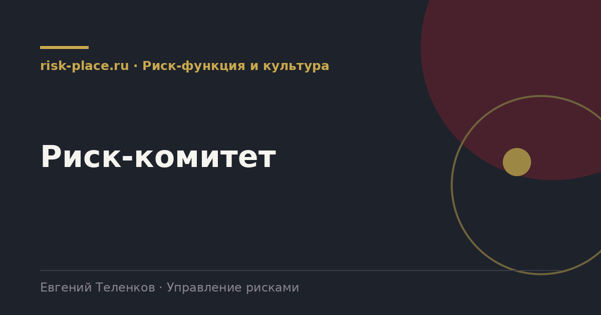

Главная · Библиотека · Риск-функция и культура · Риск-комитет
Библиотека · Риск-функция и культура
Риск-комитет это место, где решения по рискам принимаются, а не обсуждаются. Разбираем состав, повестку и положение, которое делает его рабочим.

Различают два уровня. Комитет при совете директоров, чаще всего это комитет по аудиту, рассматривающий вопросы рисков, надзирает за системой в целом и оценивает ее эффективность. Комитет при исполнительном руководстве, обычно называемый риск-комитетом или комитетом по рискам, принимает оперативные решения по конкретным рискам.
Компании среднего размера обходятся одним комитетом при правлении. Публичным обществам нужны оба уровня, потому что надзор и управление это разные функции и совмещать их в одном органе неправильно.
Проверенная конфигурация.
Пункты, отсутствие которых обнаруживается на третьем заседании.
| Пункт | Содержание |
|---|---|
| Полномочия | Что комитет вправе решать сам, а что выносит выше. Особенно по превышению риск-аппетита |
| Периодичность | Не реже раза в квартал, для крупных компаний ежемесячно |
| Кворум | Обычно две трети, с обязательным участием председателя |
| Порядок формирования повестки | Кто и в какой срок подает вопросы, как формируется материал |
| Срок направления материалов | Не позднее чем за три рабочих дня, иначе обсуждения не будет |
| Форма решения | Действие, ответственный, срок. Формулировка «принять к сведению» не является решением |
| Контроль исполнения | Статус поручений первым пунктом каждого заседания |
| Порядок эскалации | Что происходит, если комитет решение не принял или оно не исполнено |
Повестка формируется из реестра, а не из желания подразделений что-то доложить. Рабочий принцип, на заседание выносятся три категории вопросов. Риски, вышедшие за установленный аппетит или приблизившиеся к порогу по индикаторам. Риски, по которым требуется решение о ресурсах. Реализовавшиеся события с разбором причин и уроков.
Все остальное направляется письменно без обсуждения. Комитет, обсуждающий все шестьдесят рисков реестра, превращается в трехчасовое совещание, на которое перестают ходить. Комитет, рассматривающий четыре-пять вопросов с требуемыми решениями, укладывается в час и сохраняет посещаемость.
Частые вопросы
Одна форма для любого вопроса
Расскажем о ближайших датах, предложим формат под ваш состав участников и назовем порядок бюджета.
Предпочитаете почту — напишите на info@risk-place.ru. Адрес: Москва, улица Скаковая, 32с2.
 risk-
risk-